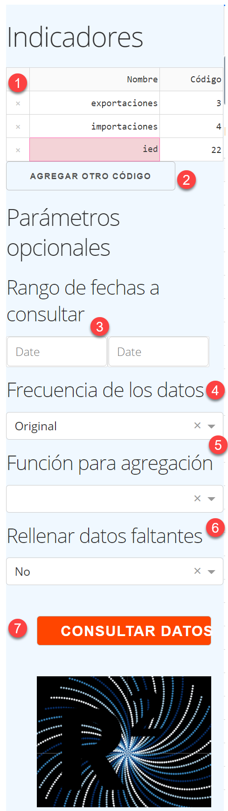

GUI¶
El propósito de esta interfase gráfica (GUI) es facilitar la búsqueda y descarga de indicadores publicados por el Banco Central de Costa Rica por medio de su servicio web..
La interfase está basada en la clase ServicioWeb del paquete bccr. Los datos se descargan y se presentan en una tabla en formato tidy, en la cual cada fila corresponde a un período (día, mes, trimestre, año) y cada columna a un indicador.
Indicadores (panel lateral)¶
Este panel contiene las opciones para delimitar la búsqueda de datos.
Indicadores En esta tabla se indican los indicadores que se desea descargar. En la columna Código se utiliza el código numérico del Servicio Web, y en la columna Nombre el nombre que tendrá la serie en la tabla de datos.
AGREGAR OTRO CÓDIGO Este botón inserta una fila adicional en la tabla de Indicadores. Para eliminar filas, hacer clic en la x de la fila respectiva.
Rango de fechas a consultar Opcional, escriba fechas en formato YYYY/MM/DD, o utilice el calendario que aparece al seleccionar el campo respectivo.
Frecuencia de los datos Opcional. De manera predeterminada se muestran datos en la frecuencia original (si se solicitan indicadores de distinta frecuencia, se reportan con la menor de las frecuencias). Se puede especificar una frecuencia menor (por ejemplo, trimestral para datos diarios o mensuales, pero no para datos anuales).
Función para agregación Opcional. Si se cambia la frecuencia de los datos, esta función determina cómo se agregan los datos de un período (promedio, suma, último o primero). Puede especificar si esta agregación debe propagar o ignorar los valores faltantes.
Rellenar datos faltantes Opcional. En algunas series es común que hayan brechas en la serie de datos (por ejemplo, en series diarias si no se reporta dato los fines de semana). Esta opción permite imputar valores a estos datos faltantes (ya sea usando el último dato disponible o el siguiente). Esta operación se hace antes de la agregación de datos (si se cambia la frecuencia de las series).
CONSULTAR DATOS Clic en este botón para consultar los datos al BCCR y mostrarlos en la tabla de la pestaña Datos y graficarlos en la pestaña Gráfico.
Datos (viñeta)¶
Presenta una tabla con los datos descargados. Puede descargar estos datos oprimiendo los botones que aparecen en la parte superior. Además, en la parte superior de la viñeta aparece el código de Python que descarga los datos mostrados en la tabla.

La tabla muestra los datos solicitados (con cuatro decimales), usando los nombres indicados en el panel lateral.
Se muestra el código de Python que obtiene estos datos, usando el ServicioWeb.
Puede escribir un nombre de archivo (sin extensión) y descargar los datos en formato Excel, Stata, o CSV presionando el botón correspondiente.
Gráfico (viñeta)¶
Presenta un gráfico de todas las series descargadas. Puede ocultar y volver a mostrar series individuales haciendo clic a su nombre en la leyenda del gráfico.

Haciendo clic en los elementos de la leyenda se muestran y ocultan las series del gráfico.
Al acercar el cursor a la parte superior aparece una barra de herramientas que permite, entre otras cosas, descargar el gráfico como una imagen PNG.
También puede cambiar el rango de fechas del gráfico, sin necesidad de modificar la búsqueda, simplemente seleccionando la región deseada del gráfico con el mouse.
Buscar códigos (viñeta)¶
Facilita la obtención de los códigos del catálogo de indicadores del Servicio Web. La tabla resultante de buscar un término (palabra o frases) puede filtrarse escribiendo en la fila superior (por ejemplo, para que solo muestre indicadores como porcentaje de variación, o solo indicadores mensuales).

Ingrese los términos que desea buscar.
Escoja el tipo de búsqueda que desea realizar, y haga clic en el botón BUSCAR.
Justo debajo de cada encabezado de columna, hay una celda en blanco. Puede escribir un texto allí para filtar los resultados de su búsqueda.
Puede ordenar los resultados haciendo clic en las flechas al lado del encabezado de cada columna.
¿Quién? (viñeta)¶
Permite identificar las relaciones de las cuentas, mostrando las cuentas superiores así como las subcuentas, para un código especificado. Esto sirve, por ejemplo, si de desea descargar los componentes del IPC.

Escriba el código de la cuenta de la cual requiere información, y haga click en BUSCAR.
En este espacio se describe la cuenta, y se muestra su ubicación en la jerarquía de datos de la base.
En este espacio se muestran todas las subcuentas (si tiene) de la cuenta buscada, así como los códigos de esos indicadores (útil cuando se necesita descargar datos de cuentas relacionadas).
Puede hacer clic en la esquina del cuadro y arrastrar para cambiar su tamaño, por ejemplo, para mostrar más subcuentas.
Ayuda (viñeta)¶
Muestra información de referencia para usar la GUI, similar a la que muestra esta documentación.